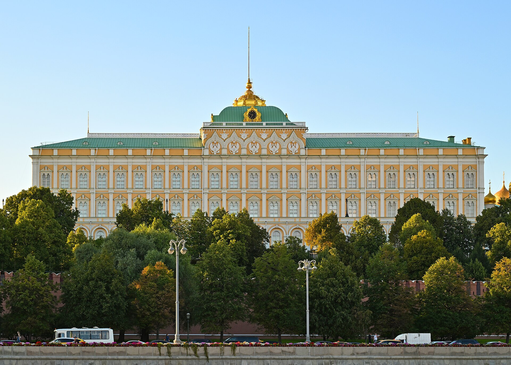

O'zbekiston–Rossiya munosabatlarining o'rnatilishi (1991–1996): diplomatiya, shartnoma va mustaqil yo'l
1991-yilgi mustaqillikdan so'ng O'zbekiston sobiq markaz — Rossiya bilan munosabatlarni qanday qurdi? Bu dalillarga asoslangan tarixiy ma'lumotnoma diplomatik aloqalar o'rnatilishi, 1992-yilgi Do'stlik shartnomasi, pul-moliya mustaqilligi va rus tilli aholining ko'chishi kabi masalalarni sanalar bilan bayon qiladi.

1991-yil 31-avgustda O'zbekiston mustaqilligini e'lon qildi, 1991-yil dekabrida esa Sovet Ittifoqi rasman tarqab ketdi. Shu bilan Toshkent va Moskva o'rtasidagi munosabat markaz–respublika munosabatidan ikki mustaqil davlat o'rtasidagi munosabatga aylandi. O'zbekiston 1991-yil 21-dekabrda Olmaota deklaratsiyasini imzolab, Mustaqil Davlatlar Hamdo'stligi (MDH) asoschilaridan biri bo'ldi. (Manba: RFE/RL — Factbox of Uzbek-Russian Relations.)
Diplomatik aloqalarning o'rnatilishi (1992)
O'zbekiston va Rossiya o'rtasida diplomatik aloqalar 1992-yil 20-martda rasman o'rnatildi. Bu ikki davlat o'rtasida elchixonalar ochish va to'laqonli davlatlararo muloqotni boshlash uchun huquqiy asos bo'ldi. (Manba: RFE/RL; Russia–Uzbekistan relations.)
1992-yilgi Do'stlik va hamkorlik shartnomasi
1992-yil 30-mayda Moskvada O'zbekiston va Rossiya o'rtasida «Davlatlararo munosabatlar, do'stlik va hamkorlik asoslari to'g'risida»gi shartnoma imzolandi. Bu hujjat ikki tomonlama munosabatlarning, shu jumladan harbiy hamkorlikning tamal toshiga aylandi va keyingi yuzdan ortiq ikki tomonlama kelishuvlar uchun ramka vazifasini o'tadi. (Manba: Russia–Uzbekistan relations; CIS-legislation — shartnoma matni.)

Xavfsizlik: Toshkent shartnomasi
Xuddi shu davrda, 1992-yil 15-mayda, Toshkentda MDHning Kollektiv Xavfsizlik Shartnomasi imzolandi va O'zbekiston uning dastlabki ishtirokchilaridan biri edi. Biroq O'zbekiston keyinchalik mintaqaviy bloklarga nisbatan ehtiyotkor, ko'p vektorli yondashuvni afzal ko'rdi va 1999-yilda ushbu shartnomadan chiqdi. (Manba: Collective Security Treaty Organization.)
Pul-moliya mustaqilligi
Mustaqillikning dastlabki yillarida O'zbekiston hali Rossiya rubllidan foydalanardi. 1993-yil 15-noyabrdan mamlakat rubl zonasidan chiqib, vaqtinchalik «so'm-kupon»ni joriy etdi, 1994-yil 1-iyulda esa to'laqonli milliy valyuta — so'm muomalaga kiritildi. Bu qadam O'zbekistonning pul-moliya sohasidagi mustaqilligini mustahkamladi. (Manba: O'zbekiston Markaziy banki — milliy valyuta tarixi.)
Rus tilli aholi va ko'chish
Mustaqillik arafasida O'zbekistonda katta rus tilli aholi yashardi. 1990-yillarda ularning muhim qismi Rossiyaga ko'chib ketdi: RFE/RL ma'lumotiga ko'ra, 1990-yillarning o'rtalariga kelib taxminan 500 000 kishi O'zbekistondan Rossiyaga ko'chgan, Rossiya elchixonasi esa Toshkentda kuniga 130–150 ta fuqarolik hujjati rasmiylashtirgan (bir necha yil ichida jami ~170 000). (Manba: RFE/RL — Factbox of Uzbek-Russian Relations.)
Ikki fuqarolik masalasi
Ba'zi MDH davlatlaridan farqli o'laroq, O'zbekiston Rossiya bilan ikki fuqarolik to'g'risida kelishuvga bormadi va bitta fuqarolik tamoyilini saqlab qoldi. Bu O'zbekistonning suverenitetni ta'kidlashga qaratilgan siyosatining bir ko'rinishi edi. (Manba: Russia–Uzbekistan relations.)
Karimovning ko'p vektorli yo'li
Birinchi prezident Islom Karimov Moskva bilan rasmiy do'stona munosabatni saqlagan holda, ayni paytda suverenitet va o'ziga tayanishni qat'iy ta'kidladi. Tahlilchilar bu yondashuvni «mudofaaviy o'ziga tayanish» deb ta'riflaydi: O'zbekiston bitta markazga qaram bo'lib qolmaslik uchun Rossiya, G'arb, Turkiya va qo'shnilar bilan muvozanatli aloqalarni rivojlantirishga intildi. Dastlabki yillarda Toshkent–Moskva munosabati ancha vazmin kechdi. (Manba: Chatham House — Karimov's foreign policy legacy.)
Xulosa
1991–1996-yillar O'zbekiston uchun Rossiya bilan munosabatni teng huquqli ikki davlat ramzida qaytadan qurish davri bo'ldi: diplomatik aloqalar, asosiy do'stlik shartnomasi va o'z valyutasi orqali Toshkent mustaqil davlatchiligini mustahkamladi. Ayni paytda rus tilli aholining ko'chishi va iqtisodiy bog'liqlik bu munosabatni murakkab va ko'pqirrali qilib qoldi. Ushbu maqola tarixiy dalillarni bayon qiladi va siyosiy baho bermaydi.

Manbalar
- RFE/RL — Uzbekistan: Factbox Of Uzbek-Russian Relations
- Russia–Uzbekistan relations (overview)
- CIS-legislation — Treaty on the foundations of interstate relations, friendship and cooperation (30 May 1992)
- Central Bank of the Republic of Uzbekistan — national currency
- Chatham House — Uzbekistan's defensive self-reliance: Karimov's foreign policy legacy